5 Географическая привязка
5.1 Краткая теоретическая информация
Эллипсоид – математическая фигура,описывающая фигуру Земли и характеризующаяся параметрами малой и большой полуоси.
Географическая (геодезическая) система координат – система координат на эллипсоиде, задающая счёт широтам и долготам в градусах, а также положение эллипсоида внутри тела земли.
Спроецированная (прямоугольная) система координат – система координат проекции, определяющая ориентировку декартовых осей координат и их начало.
Географическая привязка – сопоставление точек изображения и точек местности.
Трансформация – перевод данных из одной системы координат в другую.
5.2 Исходные данные
5.3 Цель работы
Привязать топографическую карту, а затем к ней привязать аэрофотоснимок. Оценить точность привязки карты и снимка. Определить детализацию снимку и соответствующий ей масштаб. Обосновать выбор опорных точек для привязки снимка, указав на отличия ситуации, отражённой на карте и на снимке.
5.4 Системы координат в QGIS
Системы координат в QGIS задаются в свойствах проекта. Для этого нужно открыть пункт меню Проект – Свойства.
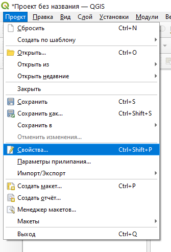
Перейдите на вкладку Системы координат. В среднем окне видно две свёрнутые группы систем координат – географические и прямоугольные (спроецированные).
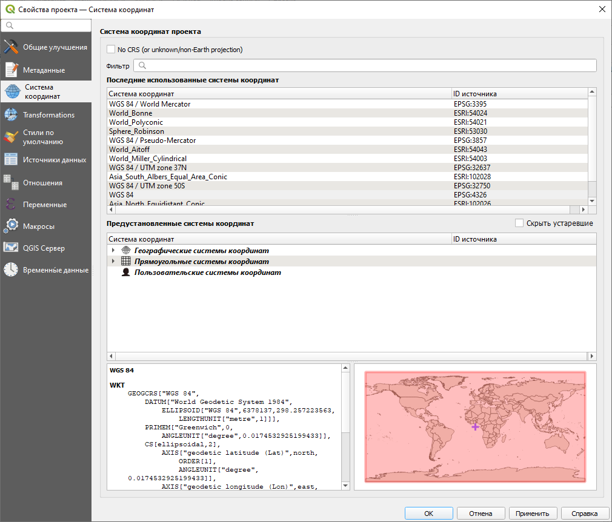
Если раскрыть эти группы, то вы увидите полный перечень систем координат по алфавиту. Например, поскольку известно, что для старых отечественных топографических карт используется проекция Гаусса-Крюгера на основе системы координат координат Пулково 1942 года, то можно пролистать перечень прямоугольных СК до Pulkovo 1942 и далее найти нужную зону проекции Гаусса-Крюгера нужной ширины (они бывают 3° и 6°). Также нужные проекции можно искать через строку поиска вверху окна.
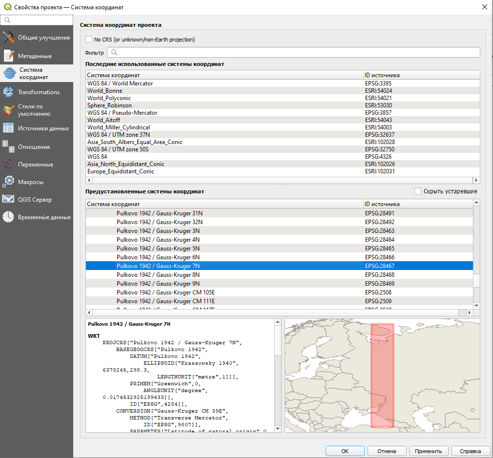
5.5 Привязка топографической карты
Добавьте топографическую карту в проект, нажав на кнопку
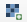
. Поскольку открытая карта на данный момент не привязана, справа от слоя в таблице слоёв вы увидите знак вопроса.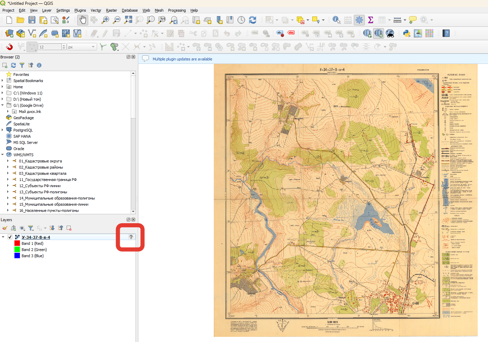
Если вы не видите карту, то, вероятно, она расположилась где-то за пределами вашего экрана. Чтобы увидеть её, нажмите правой кнопкой мыши по слою и выберете Увеличить до слоя. Обратите внимание на значения координат и масштаб внизу окна. Что они могут означать?
Запустите модуль привязки через меню Layer – Georeferencer (Слои – Привязка растров…).
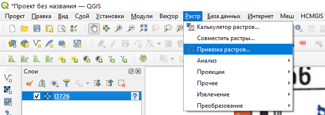
Если вы не видите такого пункта меню, то зайдите в Установки – Модули и управление модулями, вбейте в поиск «привязка» и включите соответствующий модуль, поставив галочку.
Откроется отдельное окно привязки. Нажмите на кнопку Открыть растр , добавьте привязываемый растр. Нажмите на кнопку  . В качестве типа трансформации для топографических карт должно быть достаточно полиномиального первой степени. Укажите целевую систему координат (в которой должна находиться привязываемая карта), а также путь для сохраняемого файла. Поставьте галочку напротив последнего пункта, чтобы привязанное изображение автоматически добавилось в проект.
. В качестве типа трансформации для топографических карт должно быть достаточно полиномиального первой степени. Укажите целевую систему координат (в которой должна находиться привязываемая карта), а также путь для сохраняемого файла. Поставьте галочку напротив последнего пункта, чтобы привязанное изображение автоматически добавилось в проект.
Сохраняйте файлы в папку с путями без латиницы, пробелов и спецсимволов.
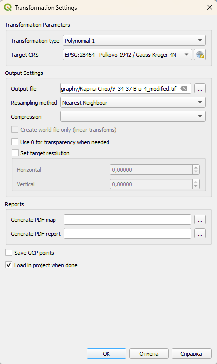
Нажмите OK. Теперь вы можете приступать к привязке. Щелчок левой кнопкой мыши по привязываемому изображению откроет окно, куда будет предложено ввести координаты. Выберите пересечения линий прямоугольной сетки в качестве точек с известными прямоугольными координатами. Введите соответствующие значения единицах проекции (метрах). Убедитесь в том, что у вас выбрана система координата ввода, совпадающая с системой координат карты.
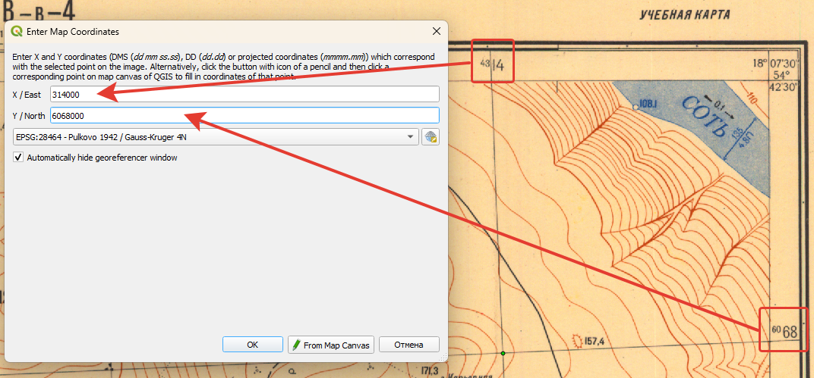
Обратите внимание, что оси X и Y в геоинформационном программном обеспечении ориентированы как в математике. Для координаты X вводить номер зоны не нужно.
Введите не менее 5 точек равномерно по всей карте – обычно это углы и центр листа. Внизу окна появится таблица с вашими точками привязки – будут указаны координаты этих точек в исходной СК изображения и в целевой СК. После ввода более трёх точек таблице внизу должны появиться расчётные невязки. Убедитесь в том, что невязки имеют значение около одного пикселя.
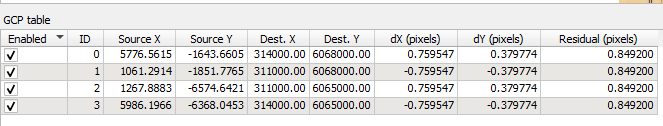
Если невязка большая, нужно удалить неправильную опорную точку, нажав на кнопку и выбрав точку на карте. Для добавления новой точки выберите кнопку
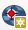
. Когда точность трансформации станет удовлетворительной, запустите сам процесс трансформации, нажав на кнопкуОбратите внимание, что у вас теперь есть два слоя с картой – один исходный без привязки, а второй с привязкой. Выделите слой с привязанной картой и щёлкните ПКМ. В меню выберите Zoom to layer(s) – приблизиться к слою. Обратите внимание на координаты в нижнем окошке – они должны соответствовать координатам карты. Теперь непривязанную карту можно удалить из слоёв.
5.6 Привязка аэрофотоснимков
Привязка материалов аэрофотосъёмки происходит аналогично, но в качестве опорных точек выступают соответственные точки на топографической карте. Для этого нужно сопоставить снимок с картой и найти эти точки. В модуле привязке выберите точку, но при появлении окна не вводите координаты, а выберите кнопку С карты.

Расставьте минимум 5 точек равномерно по всему снимку. В параметрах преобразования укажите тип трансформации – проективное. Именно такое преобразование используется для аэрофотоснимков.
5.7 Измерения по карте и снимку
Для измерений по карте или по снимку используется инструмент линейки , расположенный на панели атрибутов. Если у вас такой панели нет, её можно открыть, щёлкнув правой кнопкой мыши по пустому месту сверху.
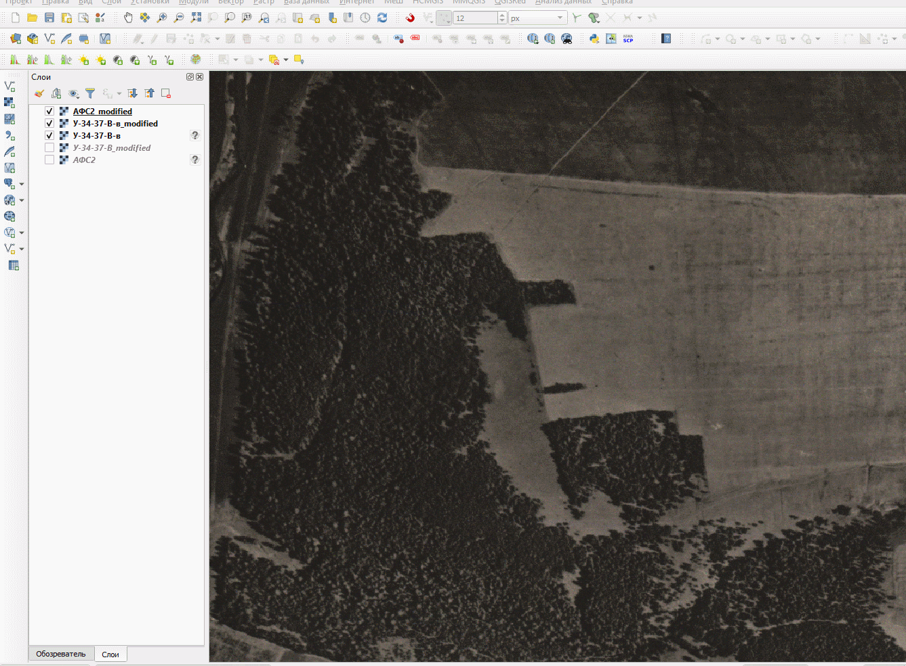
Карпачевский А.М. Топография с основами картографии. М.: Географический факультет МГУ, r lubridate::year(Sys.Date()). |